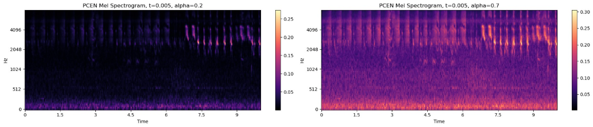
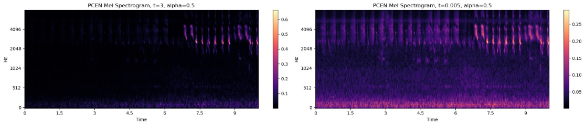
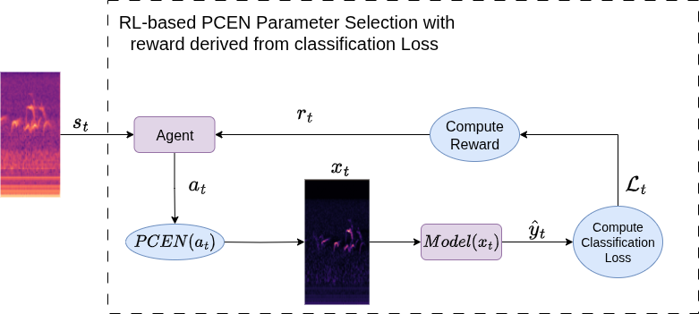
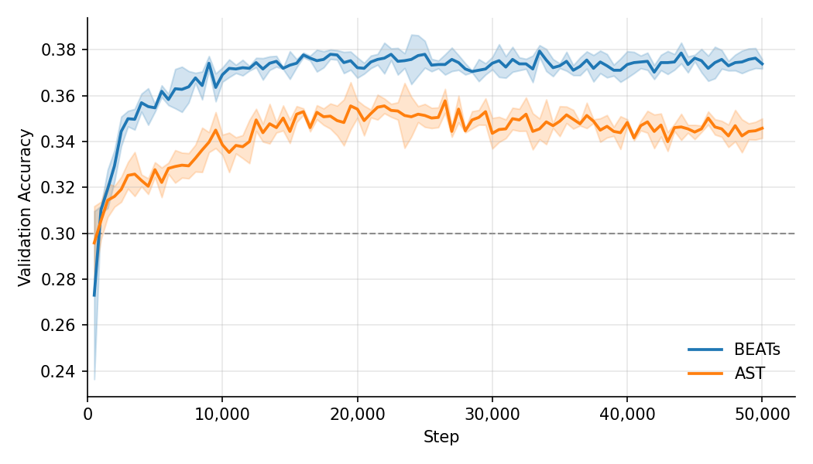
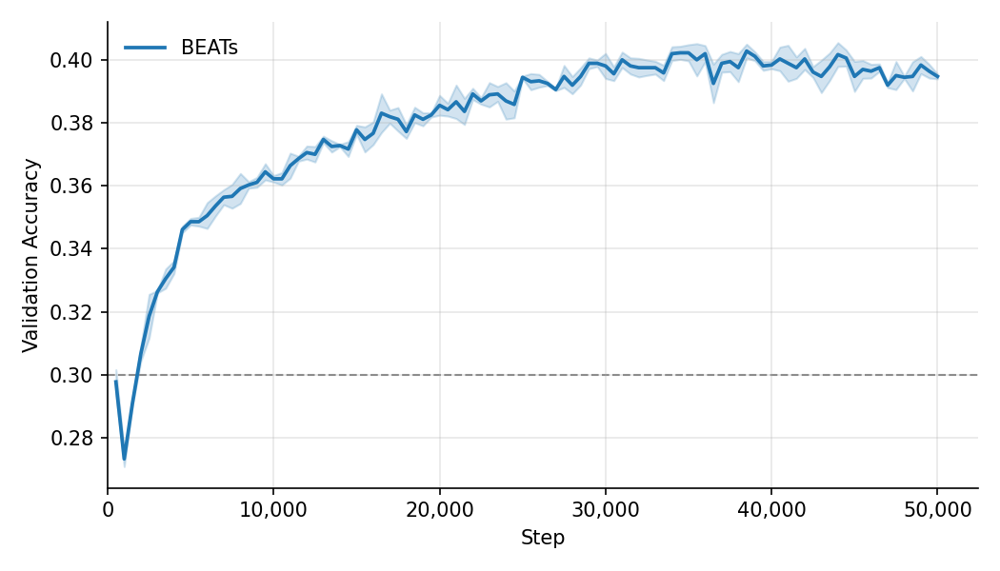
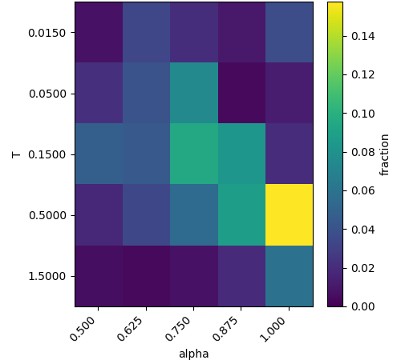
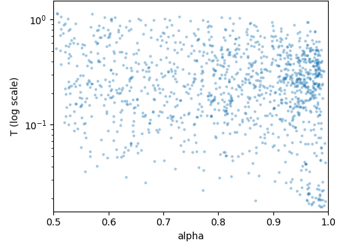

In acoustic signal processing for classification tasks, robustness to noise, particularly in uncontrolled environments, remains a persistent challenge. Per-channel Energy Normalization (PCEN) has emerged as an effective alternative to traditional frontends such as log-Mel spectrograms, offering improved adaptability through a set of differentiable hyperparameters that control signal filtering. While these parameters can, in principle, be learned, their optimization is nontrivial, and fixed configurations often fail to generalize across varying signal characteristics and noise conditions. Suboptimal parameter choices may either inadequately suppress noise or inadvertently attenuate relevant signal components. To address this, we propose modeling the selection of a subset of PCEN hyperparameters as a Markov Decision Process, where each audio sample defines a state and hyperparameter values correspond to actions, enabling the use of Reinforcement Learning. We intend to investigate reward-based RL defining our reward model based on the resulting loss from downstream classification of the signal. We evaluate our method against fixed empirical-based parameter settings.
TL;DR: We will model hyperparameter selection for Per-channel Energy Normalization as a Markov Decision Process and use RL to train an agent to choose parameter selections given an input audio signal.
Research objectives. In this study, we primarily investigate the following objectives:
Motivation / PCEN with different parameters.


Problem setup. We formulate the problem as a Markov Decision Process (MDP) \(\mathcal{M} := (\mathcal{S}, \mathcal{A}, \mathcal{P}, r, \mu, \gamma)\), where \(\mathcal{S}\) is the state space, \(\mathcal{A}\) is the action space, \(\mathcal{P}\) is the transition kernel, \(r\) is the reward function, \(\mu\) is the initial state distribution, and \(\gamma \in (0,1)\) is the discount factor.
We define \(\Delta(\mathcal{X})\) as the set of probability distributions over a set \(\mathcal{X}\). The reward is assumed to be bounded and rescaled to \([0,1]\) without loss of generality.
In our setting, the action space corresponds to two continuous hyperparameters of the PCEN frontend: \(\mathcal{A} := \mathbb{R} \times \mathbb{R}\). The MDP is one-step, meaning each episode terminates immediately after a single action is taken: \(\mathcal{P}(s_{\text{terminal}} \mid s_0, a) = 1\).
The reward function \(r(s,a)\) is a scalar signal computed either manually or via a learned reward model (e.g., preference-based or supervised evaluation), based on downstream classification performance.
Our objective is to learn an optimal policy \(\pi^*\) such that:
\[ \pi^* = \arg\max_{\pi \in \Pi} \mathbb{E}_{s_0 \sim \mu,\; a \sim \pi(\cdot|s_0)} \left[ r(s_0, a) \right] \]
where \(\Pi := \{ \pi : \mathcal{S} \to \Delta(\mathcal{A}) \}\) denotes the set of all policies.
Method. Our method proposes training the agent for PCEN hyperparameter selection by defining the reward directly from downstream task performance. To do this, we pass the PCEN-transformed audio, generated using the agent’s selected hyperparameters, through a classifier and use the resulting loss to compute the reward signal. This encourages parameter choices that improve classification accuracy. Figure 1 shows a high-level diagram of this pipeline.

Dataset The dataset was derived from AudioSet, a large-scale collection of human-labeled audio events developed by Google. AudioSet provides YouTube video IDs together with the start and end timestamps of annotated audio segments. We downloaded the corresponding audio from YouTube and extracted the specified segments according to these timestamps. For this study, we selected only audio clips with a duration of exactly 10 seconds and retained labels that contained more than 1,000 samples. This filtering process ensured both a consistent input length and sufficient training data for each class. After filtering, the final dataset consisted of 12 labels, each containing at least 1,000 audio clips.
Evaluation of Baseline Method To motivate the limitations of the baseline, we first experiment in a fixed setting. For a fixed parameter setting, the best-performing value in the action set achieves an accuracy of around 0.58. However, when we perform per-sample grid search, the accuracy increases to approximately 0.9, indicating substantial improvement if the model can adapt its parameters dynamically. Intuitively, this suggests that a single global parameter choice is insufficient because different data samples (particularly those belonging to classes with distinct target characteristics) may require different optimal settings. A parameter that works well for one class can be suboptimal for another, leading to degraded overall performance under a fixed configuration.
Our Method. We train a SAC agent whose state is a pre-computed encoder embedding (AST or BEATs) of the mel spectrogram. In the discrete setting, the action space is defined as \(\alpha \in \{0.5,\,0.625,\,0.75,\,0.875,\,1.0\}\) and \(T \in \{0.015,\,0.05,\,0.15,\,0.5,\,1.5\}\), where the five T values are sampled on a log scale to better cover the meaningful dynamic range of the smoothing parameter. In the continuous setting, \(\alpha \in (0.2,\,1.0)\) and \(T \in (0.005,\,3.0)\). Rather than using a sparse classification signal directly, we adopt the reward \[ r = p_{\text{true}} - \max_{k \neq y} p_k \;+\; \lambda \cdot \mathbf{1}[\hat{y} = y], \] with \(\lambda = 1\), which we found empirically to guide the policy toward accuracy-improving actions more reliably than cross-entropy-based rewards. The critic in the discrete setting outputs a Q-value for every action given the state, while in the continuous setting it takes a (state, action) pair and produces a scalar value.
The action heatmap (discrete) and scatter plot (continuous) reveal that the learned policy does not collapse to a single point; instead it distributes actions across a broad region, with a relative concentration toward higher \(\alpha\) values (\(\approx 0.75\)–\(1.0\)) and moderate \(T\) values (\(\approx 0.15\)–\(0.5\)). This suggests the agent learns a soft preference rather than a fixed assignment, reflecting the diversity of optimal parameters across audio samples. As reported in the main results table, the agent consistently outperforms the fixed baseline under all three evaluation settings.

Validation accuracy (discrete)

Validation accuracy (continuous)

Action heatmap

Action scattor plot
Main results. Mean episodic return (± std over N seeds). Best per column in bold.
| Method | AST (discrete) ↑ | BEATs (discrete) ↑ | BEATs (continuous) ↑ |
|---|---|---|---|
| Baseline | 0.302 ± 0.0 | 0.302 ± 0.0 | 0.313 ± 0.0 |
| Ours | 0.365 ± 0.003 | 0.385 ± 0.004 | 0.382 ± 0.005 |
Conclusions
Practical implications The results demonstrate the potential of a drop-in parameter selection agent for improving PCEN-based preprocessing in acoustic classification pipelines. In particular, agent-driven PCEN optimization improves classification performance across diverse sound classes. Overall, this suggests a reduction in reliance on empirical parameter selection and task-specific hyperparameter tuning, supporting more adaptive preprocessing under changing acoustic conditions.
@misc{agentbasedpcen2026,
author = {Hao-Yu, Tsai and Hui-Ying Shih and Spencer Perkins},
title = {Agent-based PCEN: Reinforcement Learning for Dynamic Hyperparameter Optimization in Per-channel Energy Normalization},
year = {2026},
}